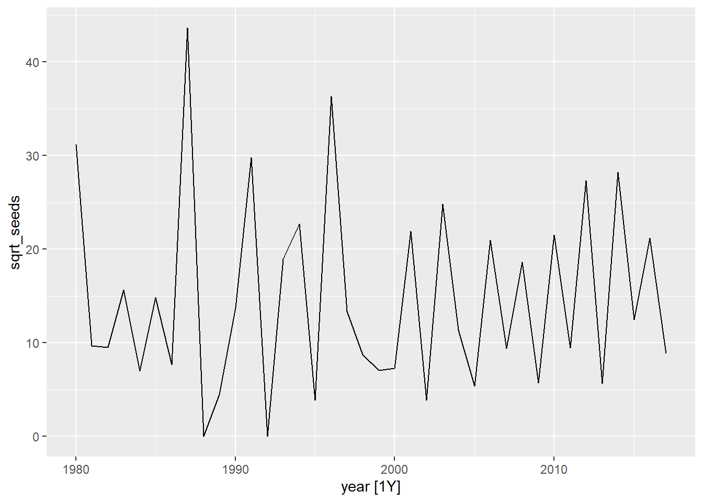

Séries temporelles - Solutions
Données
Le jeu de données oak_seeds.csv indique le nombre de graines du chêne Quercus crispula recueillies annuellement (1980-2017) par 16 capteurs (trap) situés dans un peuplement de cette espèce au Japon.
seed <- read.csv("../donnees/oak_seeds.csv")
head(seed)## year trap seeds
## 1 1980 1 13
## 2 1980 2 131
## 3 1980 3 44
## 4 1980 4 44
## 5 1980 5 47
## 6 1980 6 27Le fichier oak_weather.csv contient quant à lui des données météo annuelles pour ce même site:
weather <- read.csv("../donnees/oak_weather.csv")
head(weather)## year temp_fl temp_gr rain_fl rain_gr
## 1 1980 14.9 15.2 75 437
## 2 1981 9.3 15.4 40 766
## 3 1982 11.5 15.8 109 487
## 4 1983 11.5 15.9 49 657
## 5 1984 13.4 17.1 49 622
## 6 1985 11.5 16.9 63 501- temp_fl: Température (\(^{\circ}\)C) moyenne durant la période de floraison de l’arbre.
- temp_gr: Température (\(^{\circ}\)C) moyenne durant la saison de croissance
- rain_fl: Quantité totale de pluie (en mm) durant la période de floraison de l’arbre.
- rain_gr: Quantité totale de pluie (en mm) durant la saison de croissance.
Ces données proviennent de l’étude suivante:
Shibata, M., Masaki, T., Yagihashi, T., Shimada, T., & Saitoh, T. (2019). Data from: Decadal changes in masting behaviour of oak trees with rising temperature. Dryad Digital Repository. https://doi.org/10.5061/dryad.v6wwpzgrb
1. Série temporelle à l’échelle du site
- Calculez le nombre total de graines recueillies par année (tous capteurs confondus) et appliquez une transformation racine carrée au résultat. Convertissez le résultat en tableau de données temporel (tsibble) et visualisez la série temporelle obtenue.
Note: Puisque nous utiliserons des modèles linéaires plutôt que des modèles généralisés dans cet exercice, la transformation racine carrée vise à stabiliser la variance des données de comptage.
Réponse
library(fpp3)
library(dplyr)
library(ggplot2)
seed <- group_by(seed, year) %>%
summarize(seeds = sum(seeds)) %>%
mutate(sqrt_seeds = sqrt(seeds))
seed <- as_tsibble(seed, index = year)
autoplot(seed, sqrt_seeds)
- Visualisez les corrélations temporelles pour cette série. Quel type de modèle ARIMA (AR et/ou MA, ainsi que leur ordre) pourrait être approprié ici?
Réponse
cowplot::plot_grid(autoplot(ACF(seed, sqrt_seeds)),
autoplot(PACF(seed, sqrt_seeds)))
L’ACF et la PACF ont une valeur significative pour un délai de 1, ce qui suggère un modèle MA(1) ou AR(1).
- Ajustez un modèle ARIMA en laissant la fonction choisir automatiquement le type et l’ordre du modèle. Que signifient les coefficients obtenus?
Réponse
mod_1c <- model(seed, ARIMA(sqrt_seeds))
report(mod_1c)## Series: sqrt_seeds
## Model: ARIMA(0,0,1) w/ mean
##
## Coefficients:
## ma1 constant
## -0.6926 14.5833
## s.e. 0.1638 0.4527
##
## sigma^2 estimated as 74.57: log likelihood=-135.14
## AIC=276.28 AICc=276.99 BIC=281.19Il s’agit d’un modèle MA(1). Le coefficient MA1 est de -0.69 ce qui signifie que le résidu à une année contribue négativement à l’année suivante. Le terme constant (14.6) est la moyenne de sqrt_seeds entre les années.
- Joignez le jeu de données
weatheret ajustez un modèle ARIMA incluant les quatre variables météorologiques comme prédicteurs externes. Est-ce que ces variables contribuent à mieux prédire le nombre de graines produites par année?
Réponse
seed <- inner_join(seed, weather)## Joining, by = "year"mod_1d <- model(seed, ARIMA(sqrt_seeds ~ temp_gr + rain_gr + temp_fl + rain_fl))
report(mod_1d)## Series: sqrt_seeds
## Model: LM w/ ARIMA(0,0,1) errors
##
## Coefficients:
## ma1 temp_gr rain_gr temp_fl rain_fl
## -0.6564 -0.879 -0.0051 2.5660 0.0188
## s.e. 0.1810 0.801 0.0082 1.0448 0.0404
##
## sigma^2 estimated as 72.27: log likelihood=-132.85
## AIC=277.7 AICc=280.41 BIC=287.52Seule la température durant la période de floraison (temp_fl) semble avoir une effet significatif, mais l’AIC est plus élevé que le modèle précédent, donc ce modèle n’est pas préférable à celui sans prédicteur.
- Quel type de modèle est choisi par
ARIMA()si vous ne considérez que la sous-série débutant en l’an 2000, sans prédicteur externe? Expliquez ce choix à partir du graphique en (a) et des corrélations temporelles pour cette sous-série.
Réponse
seed2000 <- filter(seed, year >= 2000)
mod_1e <- model(seed2000, ARIMA(sqrt_seeds))
report(mod_1e)## Series: sqrt_seeds
## Model: ARIMA(1,0,0) w/ mean
##
## Coefficients:
## ar1 constant
## -0.7719 26.5884
## s.e. 0.1394 1.2182
##
## sigma^2 estimated as 28.52: log likelihood=-55.09
## AIC=116.18 AICc=117.89 BIC=118.85Il s’agit maintenant d’un modèle AR(1) avec une corrélation négative de -0.77. À partir de l’an 2000, la série temporelle en 1(a) semble alterner plus régulièrement entre des valeurs hautes et basses aux 2 ans. Aussi, si le graphique de la PACF contient une seule valeur significative, l’ACF est significativement positive à un délai 2, comme on s’atteint pour un modèle AR. (La corrélation négative entre \(y(t)\) et \(y(t-1)\), puis \(y(t-1)\) et \(y(t-2)\), cause une corrélation positive entre \(y(t)\) et \(y(t-2)\).)
cowplot::plot_grid(autoplot(ACF(seed2000, sqrt_seeds)),
autoplot(PACF(seed2000, sqrt_seeds)))
- Calculez les prévisions des modèles en (c) et (e) pour les cinq années suivantes. Comment ces prévisions différent-elles?
cowplot::plot_grid(autoplot(forecast(mod_1c, h = 5), seed),
autoplot(forecast(mod_1e, h = 5), seed))
Lors de la 2e année, le modèle MA(1) perd toute “mémoire” et revient à la moyenne de la série, tandis que le modèle AR(1) poursuit un cycle aux 2 ans.
2. Série temporelle par capteur
- Reprenez le tableau original indiquant le nombre de graines par année et capteur, puis appliquez la transformation racine carrée au nombre de graines. Utilisez ensuite la fonction
lmedu package nlme pour ajuster un modèle linéaire mixte incluant: l’effet fixe des variables météo, l’effet aléatoire du capteur et les corrélations temporelles d’une année à l’autre.
Voici un exemple de la façon de spécifier un effet aléatoire d’une variable GROUPE sur l’ordonnée à l’origine d’un modèle lme, ainsi qu’une corrélation de type ARMA entre éléments successifs d’un même GROUPE:
library(nlme)
mod_lme <- lme(..., data = ...,
random = list(GROUPE = ~1),
correlation = corARMA(p = ..., q = ..., form = ~ 1 | GROUPE))Réponse
seed <- read.csv("../donnees/oak_seeds.csv")
seed <- mutate(seed, sqrt_seeds = sqrt(seeds))
seed <- inner_join(seed, weather)## Joining, by = "year"Essayons un modèle MA(1) comme en 1(d).
library(nlme)
mod_lme <- lme(sqrt_seeds ~ temp_gr + rain_gr + temp_fl + rain_fl,
data = seed, random = list(trap = ~1),
correlation = corARMA(p = 0, q = 1, form = ~ 1 | trap))
summary(mod_lme)## Linear mixed-effects model fit by REML
## Data: seed
## AIC BIC logLik
## 2982.101 3017.317 -1483.051
##
## Random effects:
## Formula: ~1 | trap
## (Intercept) Residual
## StdDev: 0.5691401 2.758073
##
## Correlation Structure: ARMA(0,1)
## Formula: ~1 | trap
## Parameter estimate(s):
## Theta1
## -0.2633027
## Fixed effects: sqrt_seeds ~ temp_gr + rain_gr + temp_fl + rain_fl
## Value Std.Error DF t-value p-value
## (Intercept) 0.7291741 2.0910432 588 0.348713 0.7274
## temp_gr -0.3832523 0.1208343 588 -3.171717 0.0016
## rain_gr -0.0016734 0.0007029 588 -2.380675 0.0176
## temp_fl 0.8182160 0.1012331 588 8.082497 0.0000
## rain_fl 0.0002783 0.0043666 588 0.063724 0.9492
## Correlation:
## (Intr) tmp_gr ran_gr tmp_fl
## temp_gr -0.782
## rain_gr 0.126 -0.297
## temp_fl -0.355 -0.258 -0.047
## rain_fl -0.356 0.205 -0.243 0.132
##
## Standardized Within-Group Residuals:
## Min Q1 Med Q3 Max
## -1.6980503 -0.7257518 -0.1678371 0.5658611 3.8985049
##
## Number of Observations: 608
## Number of Groups: 16- Comparez la précision des effets fixes dans ce modèle en (a) par rapport au modèle en 1(d). Quelle est la raison de cette différence?
Réponse
Ici, trois des variables climatiques ont un effet significatif, mais l’effet MA(1) est aussi moindre (Theta1 = -0.26).
La transformation racine carrée appliquée au nombre de graines dans chaque capteur n’est pas équivalente à la transformation racine carrée appliquée à la somme des graines dans tous les capteurs. (La racine carrée de la somme n’est pas égale à la somme des racines carrées.) Il semble que la variance résiduelle soit plus petite dans ce modèle que dans celui basé sur la racine carrée de la somme, ce qui augmente la précision des estimés des effets fixes.